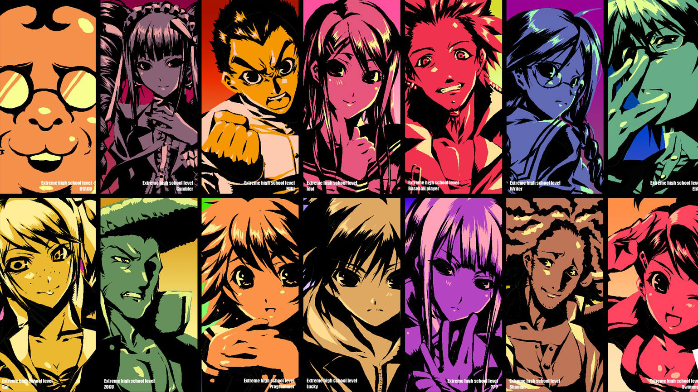
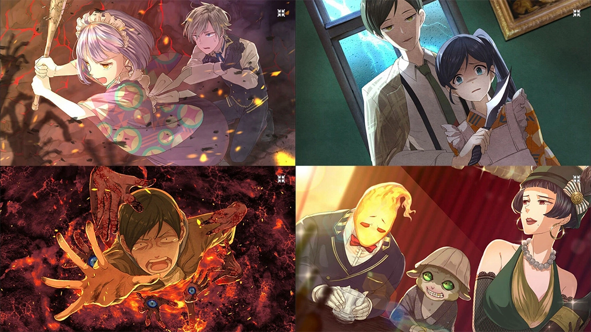
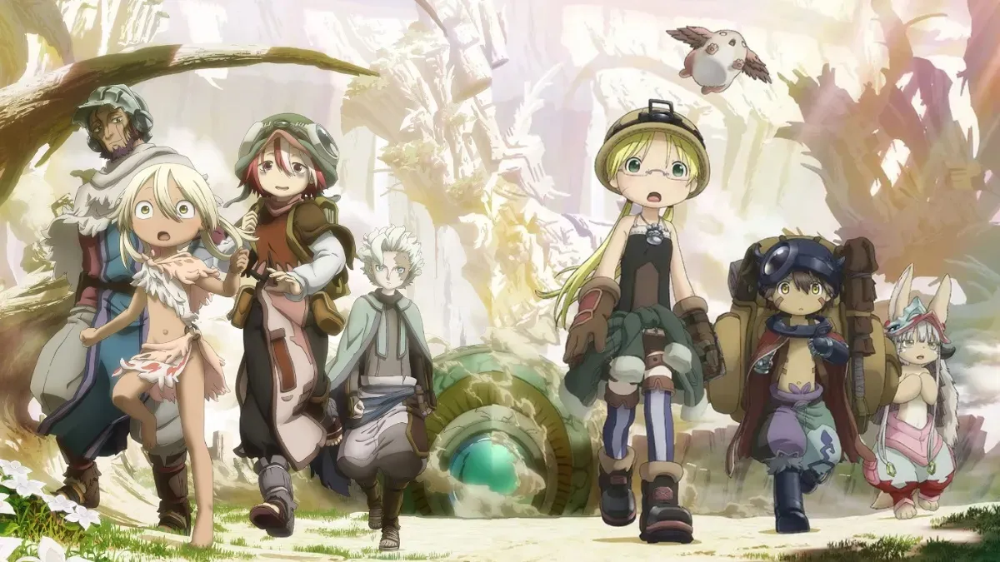

This is one of my favorites of all time, with survival theme and good characters psychology builts. I like the black and white bear in there 💓
The movies original is a puzzle game of murdered scenes, with cool vintage theme and exited puzzle solving journey while having luring songs and soundtracks. You don't want to miss this masterpiece.
What makes this movie pops up is how they combine gore, cute and survival themes together. Humanity is twisted in this world. I feel my heart is thrilling everytime i watch it.
